밀리터리 잡담 - 왜 인적 없는 계곡이 핵공격 대상일까?
게시: 2024-07-04T06:30:34+09:00
<왜 러시아는 인적도 별로 없는 미국 산속 계곡에 핵미쓸을 겨누고 있을까> 경항모의 미래는 유인 함재기가 아닌 UAV (unmanned aerial vehicle) 경항모인 것처럼, 잠수함의 미래도 수중 드론인 UUV (Unmanned underwater vehicle).
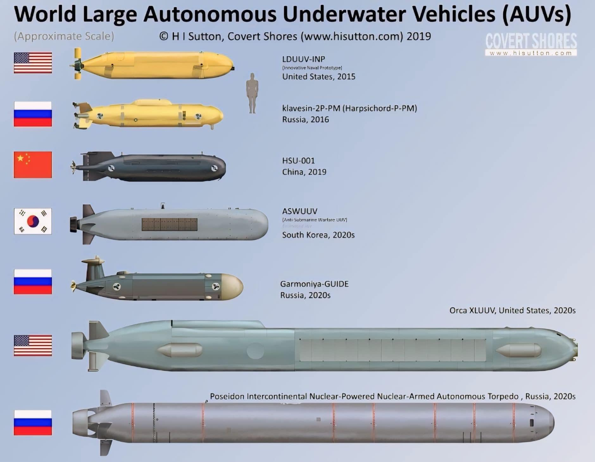
그런데 UUV는 UAV에 비해 결정적인 문제가 있는데 바로 통신 및 제어를 어떻게 하느냐 하는 부분. 진짜 자율 항행 및 자율 공격을 한다고 해도 최소한 어느 지역의 적함을 공격하라 아니다 하지 마라 정도의 명령은 전달해야 할 거 아닌가? 전파도 안 통하는 짠물 속의 UUV에게 어떻게 명령을 전달하나? 극저주파(Extremely Low Frequency)를 사용하면 수심 아래 수십 m까지도 전파가 뚫고 들어감. 실제로 핵잠 강국들은 모두 이런 ELF 통신을 통해 유사시 아군 핵잠에게 송신을 함.
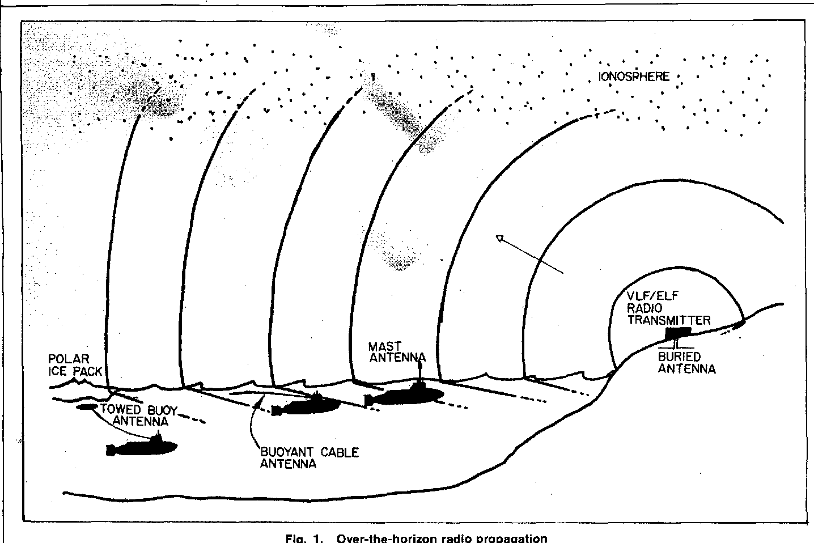
대신 극저주파는 만들기가 더욱 어려워서 그 송신 안테나의 길이는 수백~수천 km여야 함. 이게 실현 가능할까? 가능함! 지구 자체를 일종의 쌍극 안테나(dipole antenna)로 만들어서 쓰면 됨. 문제는 그런 ELF 안테나를 구축하려면 국토의 길이가 매우 중요. 그래서 영국이나 프랑스도 ELF는 갖추지 못함. 현재까지 ELF 시설을 갖춘 국가는 미국, 러시아, 중국, 인도 뿐. 아래 그림은 미국 워싱턴주에 있던 Jim Creek Naval Radio Station의 구조도. 진짜 산맥 속 계곡 전체의 큰 나무들을 잘라내고 거기에 한 변의 길이가 2~3km인 케이블들을 지그재그로 걸어 안테나를 구축. 그런데 정작 송신 요소는 저렇게 가로로 걸린 2~3km 길이의 케이블이 아니라 거기서 지상으로 수직으로 내려가는 케이블이라고. 가로로 걸린 긴 케이블들은 정전용량(capacitance)을 키워주기 위한 요소들.
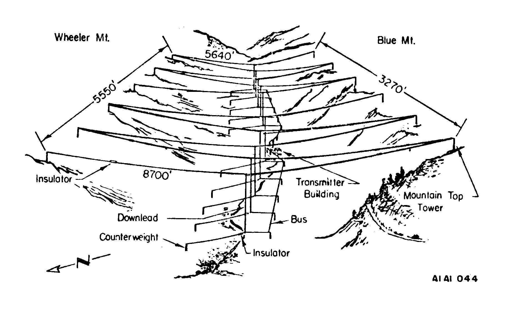 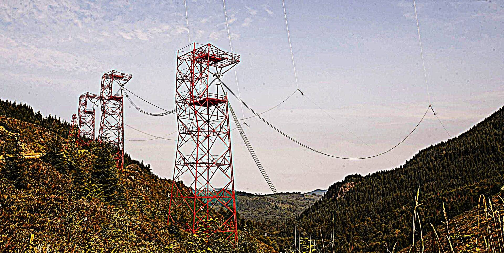
무서운 부분은 이건 VLF (very low frequency) 안테나에 불과하고 ELF 안테나는 훨씬, 훠얼씬 더 규모가 크다는 것. 1953년에 구축된 이 Jim Creek Naval Radio Station 계곡은 지금도 사용 가능한 현역 시설이며, 2019년 러시아 언론 보도에 따르면 유사시 러시아의 주요 공격 목표 중 하나. <성층권 포탄> WW1 중 독일이 사용한 포신 길이 37m짜리 소위 "Paris gun" (Pariser Kanone). 사거리 130km이고, 발사 후 포탄이 목표물에 떨어질 때까지 시간은 약 3분. 그 도중의 탄도는 최대 고도 42km에 달함.
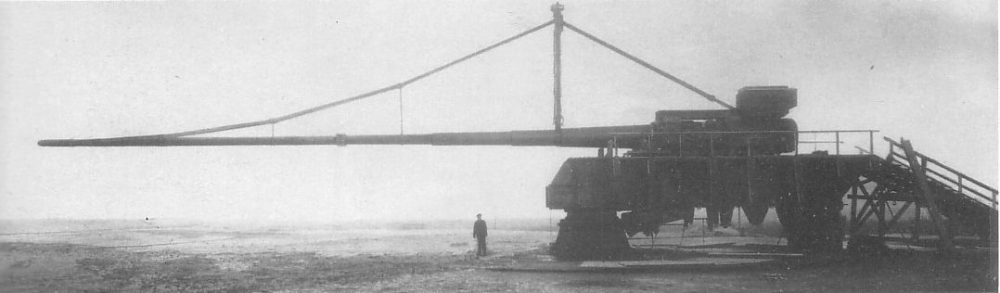
참고로 당시 가장 높이 날 수 있던 영국 전투기 Sopwith Camel의 최대 상승 고도가 5.8km. 성층권은 일반적으로 고도 10km 이상을 말하고, 대기권 공기의 99%는 32km 이하에 집중됨. 당시 인류가 만든 모든 물체 중에서 저 대포의 포탄이 가장 높이 올라간 물건이었다고 함. 이 기록은 다시 독일이 깨는데, WW2 기간 중 V2 로켓에 의해서였음. 아래 사진은 미국이 노획한 V-2 로켓을 1946년 실험하면서 거기에 카메라를 매달아 촬영한, 인류 최초로 우주에서 찍은 지구의 사진.
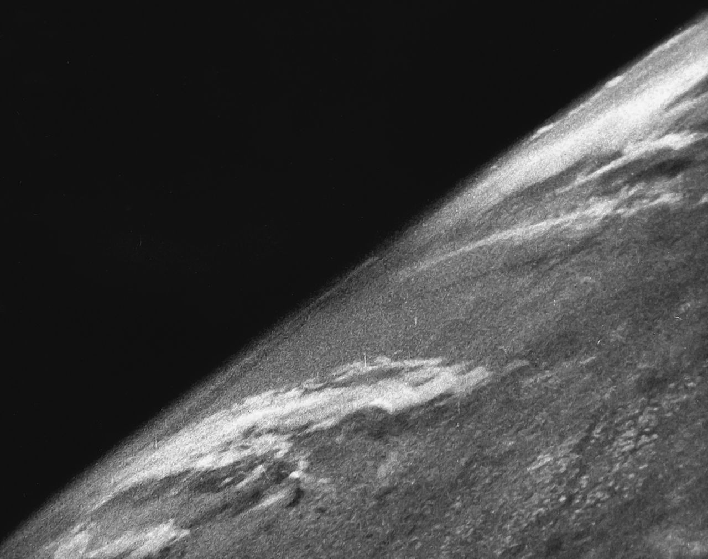
** 대포 중간의 저 현수교 기둥 같은 것은 생각하시는 그게 맞음. 긴 포신이 자체 무게로 휘는 것을 막기 위해 저렇게 현수교 같은 케이블로 지탱을 해야 했다고. ** 그러나 8.5인치 (216mm) 직경에 무게 106kg인 포탄의 장약 무게는 7kg에 불과하여 위력은 낮았고, 파리 튈르리 공원에 떨어진 포탄은 직경 3m, 깊이 1m 정도의 구덩이를 남겼을 뿐이라고. 아래 사진은 1918년 3월, 파리의 Père Lachaise 묘지에 떨어진 '파리 대포'의 포탄 자국.
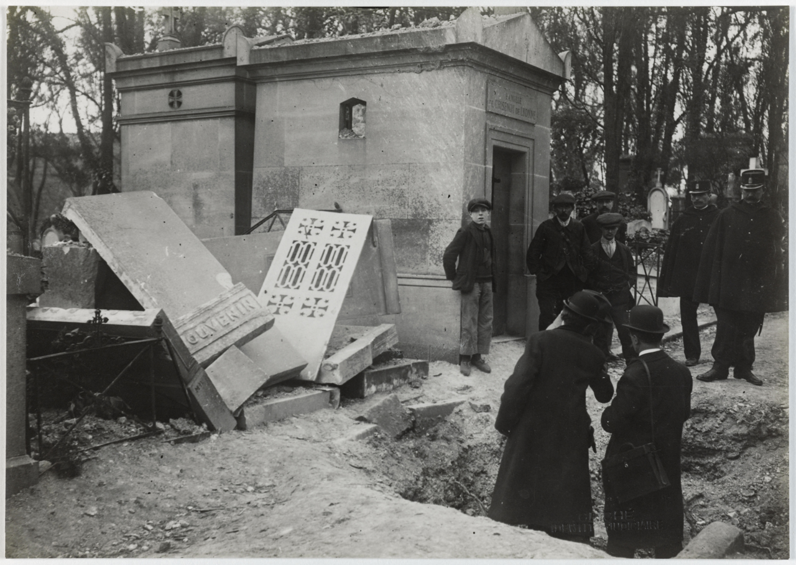
<영화에서 보니까 쉽던데!!> 1982년 포클랜드 전쟁에서 아르헨티나 해군은 수상함을 모조리 철수시켰지만 해군 항공대를 이용하여 제 역할을 확실히 수행. 대표적인 것이 쉬페르 에땅다르 함재기에 엑조세 미사일을 장착하여 여러 차례 kill을 기록한 것. 그러나 공군은 해리어와의 공중전에서도 지기만 했고, 특히 수상함에 대한 공격 훈련이 되어 있지 않아 뾰족한 성과를 내지 못함. 절치부심한 아르헨티나 공군은 프로펠러 공격기인 Pucara에 WW2 당시 생산된 Mk.13 어뢰를 장착하여 영국 수상함을 노리기로 결정. 비록 낡은 무기이지만 보유량도 많았고, 명중만 하면 제대로 효과를 낼 수 있었기 때문. 이 어뢰들은 전에 어뢰정과 PBY Catalina 비행정에서 사용하던 것.
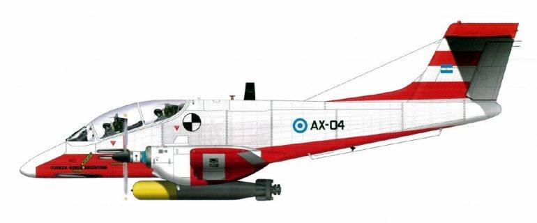
그런데 막상 테스트를 해보니 그게 쉽지가 않음. 처음에는 300노트의 속도로 330피트 상공을 날며 20도 각도로 투하했는데, 해면에 닿자마자 어뢰가 충격으로 박살이 남. 다음에는 250노트의 속도, 650피트 상공에서 45도 각도로 투하했더니 그냥 해저로 사라져버림. 아르헨티나 공군 조종사들은 매우 당황. "도라도라도라나 미드웨이 영화 보니까 쉽던데, 대체 걔들은 어떻게 한 거지?"
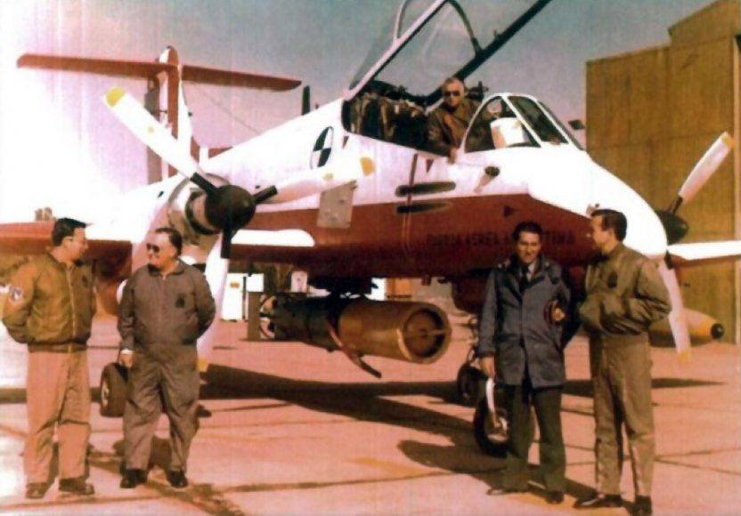
이들이 이렇게 헤맨 것은 어뢰만 있고 그 운용 매뉴얼이 없었기 때문. 그저 구전으로 전해진 정보는 입수각이 20도여야 하는데, 이 이하로 들어가면 어뢰가 해면에 튕겨나오며 부서질 것이고, 각도가 그 이상이면 어뢰가 해저로 박혀버린다는 것. 결국 여기저기 많은 질문을 해대고 궁리를 한 결과, 결국 어뢰 앞쪽에 air break를 달고 뒤쪽에는 이중 꼬리날개를 달기로 함. 이것들은 나무로 만들었고 어뢰가 착수하는 순간 떨어져 나가게 설계. 그런데 실제로 미해군도 WW2에서 뇌격기에 그런 식의 나무 판때기를 붙이긴 했음. 아래 사진은 WW2 당시 미해군 USS Wasp 비행갑판 위의 Mk 13 항공어뢰. 어뢰 꼬리에 나무로 만든 판자 같은 것이 붙어 있는 것이 보임. 사진상으로는 불분명해보이지만 어뢰 머리 부분에도 비슷하게 뭔가 나무로 만든 보호대가 있었다고.
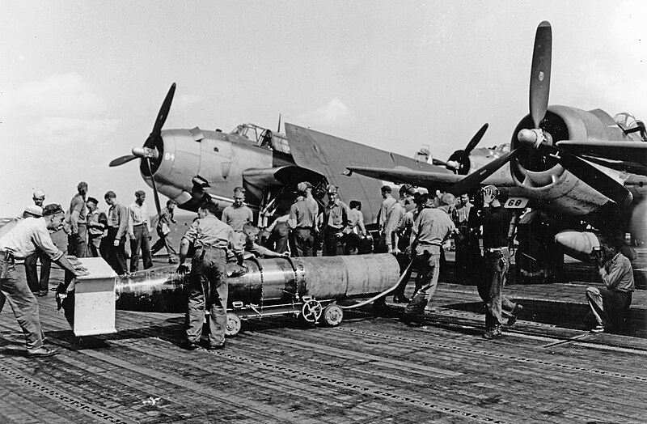
이런 장치를 갖춘 뒤에도 몇 번의 실패를 거친 뒤에야, 마침내 성공. 결국 200노트의 속도, 30피트의 초저공에서, 20도고 뭐고 그냥 수평으로 날며 투하했더니 성공한 것. 이제 어뢰를 달고 영국 함대로 뛰어들기만 하면 되었는데... 그렇게 연습하는 사이 포클랜드 섬의 아르헨티나군이 항복. 뇌격기 프로젝트는 그대로 취소됨. ** 뇌격기는 WW2 도중에 이미 핵심 무기 체계로서의 매력을 상실. 무거운 어뢰를 달고 나느라 너무 느렸고, 특히 어뢰 투하 때 대공포에 너무 취약했기 때문. 게다가 어뢰 자체도 명중률이 낮았음. 가령 1941년 일본 해군기에게 격침된 순양전함 HMS Repulse는 격침되기 전에 무려 19발의 어뢰를 회피했음. ** 그러니 실제로 푸카라 공격기가 어뢰를 달고 갔다고 하더라도 성공했을지는 의문. 다만 실제로 성공 가능성이 없지는 않았음. 당시 영국 함대엔 공중 조기경보기가 없어 저공으로 침투하는 적기를 감지하지 못했고, CAP을 치던 해리어 숫자도 매우 부족. 결정적으로 당시 영국 수상함에는 어설픈 Sea Cat 등 대공 미쓸 위주의 방어를 했는데 대공포는 부족했음. 어쩌면 성공했을 수도.
<풍선 폭격을 안 하는 이유> 오스트리아 합스부르크 제국으로부터의 독립을 선언하고 반란을 일으킨 베네치아를 포위한 오스트리아군은 1849년 7월 SMS Volcano (외륜 증기범선, 500톤)을 이용하여 종이로 만든 열기구에 시한 도화선을 부착한 약 12kg의 폭탄을 달아 베네치아를 폭격.
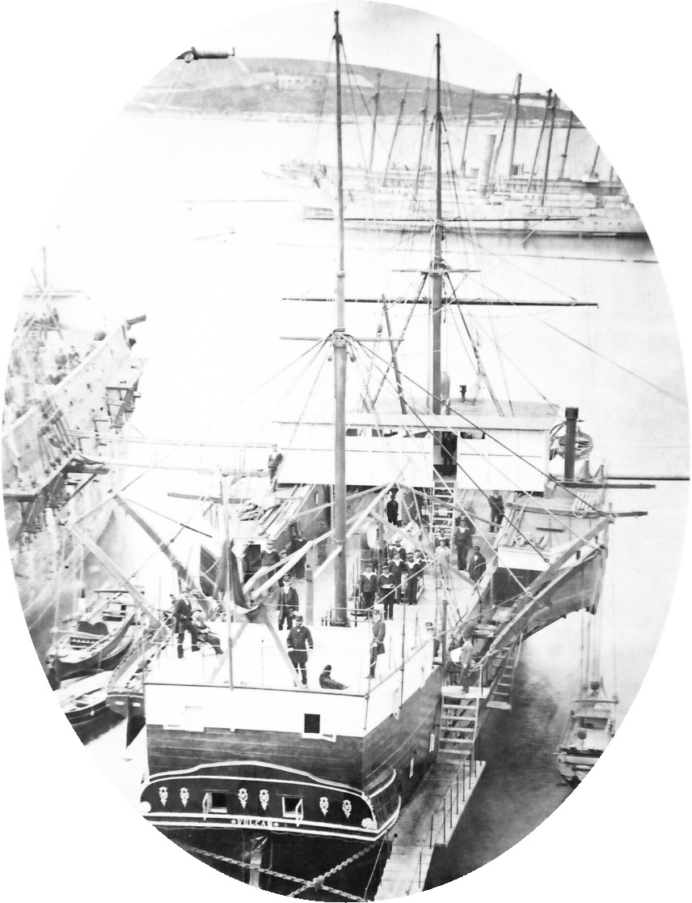
도중에 바람 방향이 바뀌는 바람에 약 200개의 열기구 중 1개만 베네치아에 떨어지고 나머지는 빗나갔는데 일부는 주변 오스트리아군 포위선에 떨어져 드론에 의한 friendly fire 최초기록까지 달성.
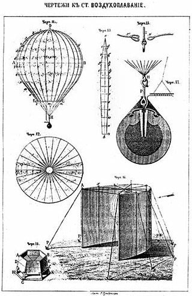